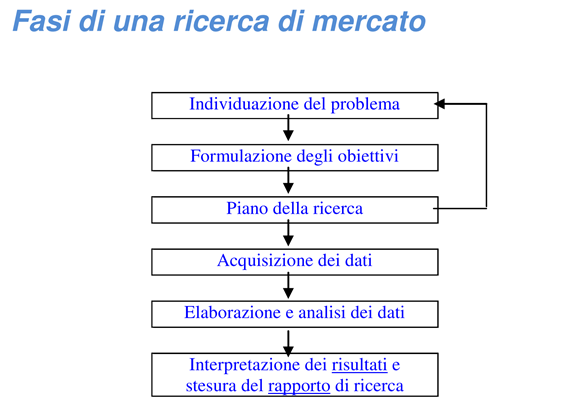
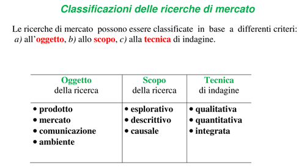
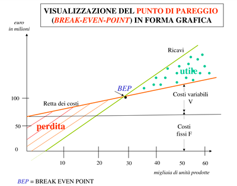
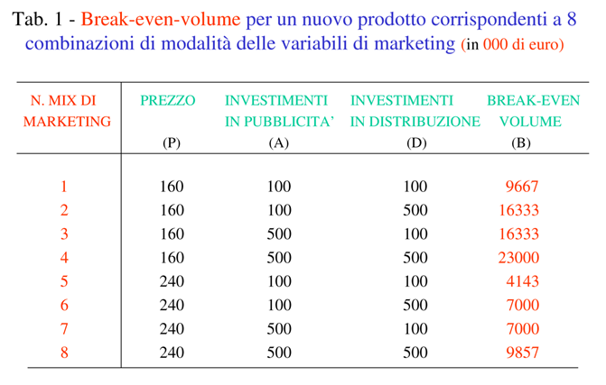
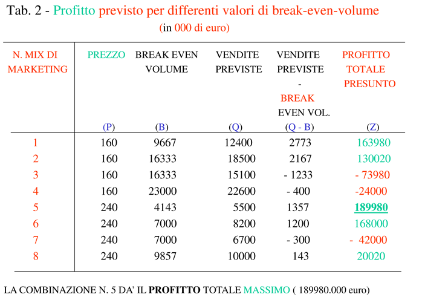
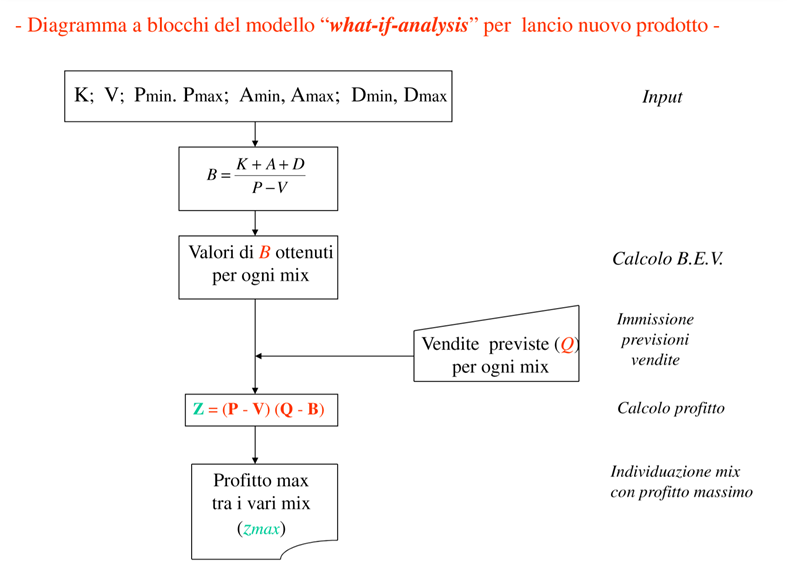
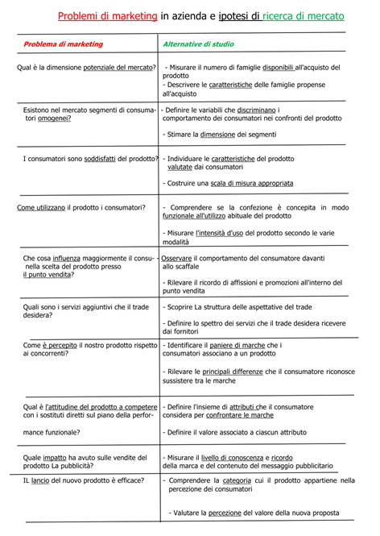
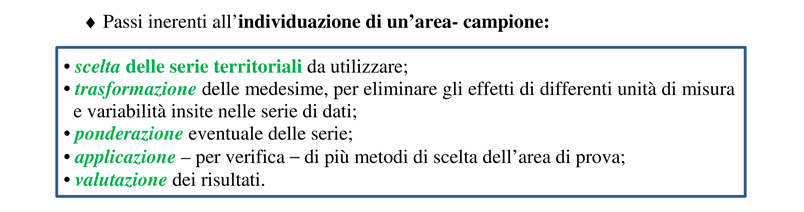
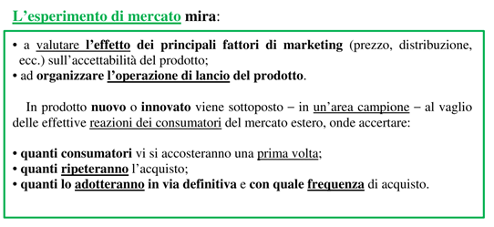
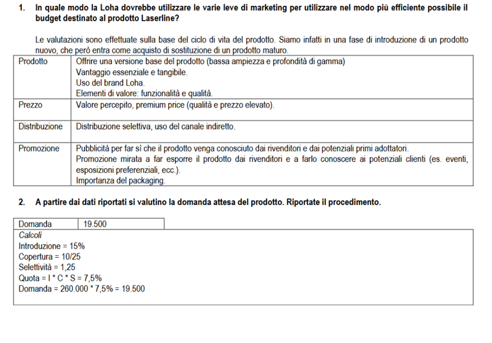

Committente vs ricercatore 2 aspetti
problematici: the committente not has conoscenze di metodologie, dall'altro
occorre tradurre the risultati statistici in informazioni economiche utili per il
committente.
Quindi this problema riguarda the comunicazione between the due
soggetti (oggetti grafici diminuiscono the problemi di comunicazione).
1.
Individuazione del problema
2.
Formulazione of the obbiettivi
3.
Piano of the ricerca
4.
Acquisizione of the dati
a.
Pre-test:
questionario pilota in cu valuto eventuali errors.
5.
Elaborazione e Analysis of the dati
6.
Interpretazione of the risultati e stesura del rapporto di ricerca.
a.
Finalità
b.
Descrizione popolazione osservata
c.
La tecnica di raccolta of the dati
d.
L'epoca di rilevazione
e.
Il piano di campionamento
f.
I criteri di estimate adottati
g.
I risultati in forma grafica
h.
Accuratezza of the estimates
i.
La struttura of the costi dell'indagine
j.
Le conclusioni


-
Descrittive (descrivere ambiente abbastanza strutturato)
-
Osservazionali (ambiente poco conosciuto esplorato con
campionamento)
-
Causali (relazione causa effetto)
-
Name test
-
Package test
-
Copy test
-
Area test
Costumer Audit
-
panel consumatore
-
panel negozi
N.B. panel = indagine continuative
Altre indagini (una tantum):
-
Brand image
-
Test on the pubblicità
-
Customer satisfaction
Obiettivi del model per
the lancio di a new prodotto di Kotler:
1) individuazione del marketing-mix ottimale (migliore
combinazione of the 4 fattori di marketing), basata sul calcolo del
break-even-volume corrispondente a diverse combinazioni di modalità of the 4
fattori
2) calcolo del profitto massimo atteso per varie combinazioni dei
fattori di marketing-mix.
VOLUME DI
PAREGGIO:
dove:
K: costi fissi = quota annua di ammortamento (di durata 5 anni) + spese generali ed amministrative(annue)
A= inveestimatesnti in pubblicità in the fase di lancio
D= inveestimatesnti in distribution
P= prezzo unitario al pubblico
V= costi variables unitarie (mano d'opera + materie prime)
DIMOSTRAZIONE
Indicando con:
P: prezzo unitario del prodotto
Q: volume (numero di unità) da produrre per the prodotto in studio
V: costo variable unitario
F: costo fisso complessivo
C: costi totali (fissi + variables) complessivi
R: ricavo complessivo
We have that:
Da these due relazioni troviamo the punto di pareggio uguagliando
Dal quale ricaviamo che
t.c. M= Margine di contribuzione unitario


Per ottenere the marketing-mix ottimale (profitto massimo) si
considerano the unità (q) di vendita previste del prodotto, corrispondenti ad
each combinazione of the variables di marketing di tab.
1.
-il profitto totale (Z) is dato from the relazione:
cioè: profitto is dato dal profitto unitario (P -V) moltiplicato
per the differenza (Q -B).
-in tab. 2 it riporta the value di Z per
the varie combinazioni of the variables di marketing (v = 100; k = 380.000).


Il Concept test is a process basato su metodi quantitativi e
qualitativi, volto a valutare the risposta of the consumatori all'introduzione di
a new prodotto sul mercato.
La ricerca is finalizzata a testare the validità di un'idea
imprenditoriale.

La rappresentatività dell'area di prova deve essere measureta con
riferimento ad a insieme di caratteristiche socio-demografiche
ed economiche.


-
tipo di prodotto
-
disponibilità di serie territoriali disaggregate (comunali
provinciali ecc.) al level richiesto
-
metodo of the aree medie:
o
consiste nel determinare the mean di ciascuna variable
considerate e it sceglie quell'area che presenta di tali variables piu prossimi
a quelli medi
-
metodo of the aree meanne:
-
metodo of the aree differenziali:
La Loha is a multinazionale che produce apparecchiature per l’edilizia (trapani, avvitatori, motoseghe, ecc.), che are venduti in numerosi paesi europei. L’azienda sta per lanciare sul mercato a new model di measuretore, denominato Laserline, progettato incorporando all the ultime innovazioni, between cui the possibilità di effettuare measurezioni also attraverso superfici. Tale soluzione consente ad esempio di poter measurere the distanza di a tubazione from the superficie di a parete per verificare che a foratura not comporti rischi di funzionamento. Il prodotto, in linea con the posizionamento generale of the Loha, it posizionerà in the fascia alta del mercato e andrà a sostituire con the proprie vendite di primo acquisto a vecchio model ormai ritenuto obsoleto. I prodotti of the Loha are da always caratterizzati da a prezzo elevato, alta qualità di prodotto e grande affidabilità. Il prodotto quindi, per quanto innovativo, it ritiene che beneficerà of the notorietà del marchio e verrà recepito as naturale sostituto of the prodotti offerti fino ad oggi dall’azienda. La Loha has preso in considerazione the mercato Europeo (25 paesi), dove the prodotto sarà lanciato prossimamente, e has valutato che the mercato of the measuretori has a dimensione complessiva di 260.000 unità. Tuttavia the Loha not opera in all these paesi, ma soltanto in 10, poiché has volutamente scelto di not competere in the altri, dove the concorrenza is particolarmente agguerrita, l’ingresso per produttori nuovi is very difficile e the margini ottenibili not are sufficientemente elevati per giustificare tale decisione. I paesi are stati selezionati also considerando che these 10 paesi are the more ricchi dell’Unione, e are quindi caratterizzati da a disponibilità di acquisto superiore to the mean, oltre ad essere the more grandi, infatti the vendite complessive di measuretori are the 25% in more with respect to the mean europea. In ciascun paese the Loha opera attraverso a distributore esclusivo; pertanto it can ritenere che abbia 10 clienti. Nei paesi dove opera the Loha, the suoi prodotti costituiscono meanmente the 15% di all the measuretori acquistati, dimostrando a buona presenza in these mercati, soprattutto considerando the posizionamento of the prodotti. In these paesi l’acquisto di measuretori avviene principalmente per sostituzione di prodotti obsoleti, fenomeno in crescita grazie also to the vita ridotta of the prodotti more recenti
